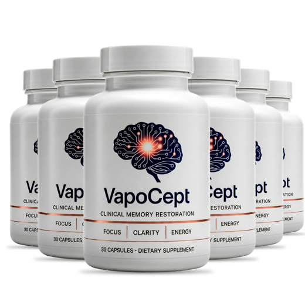
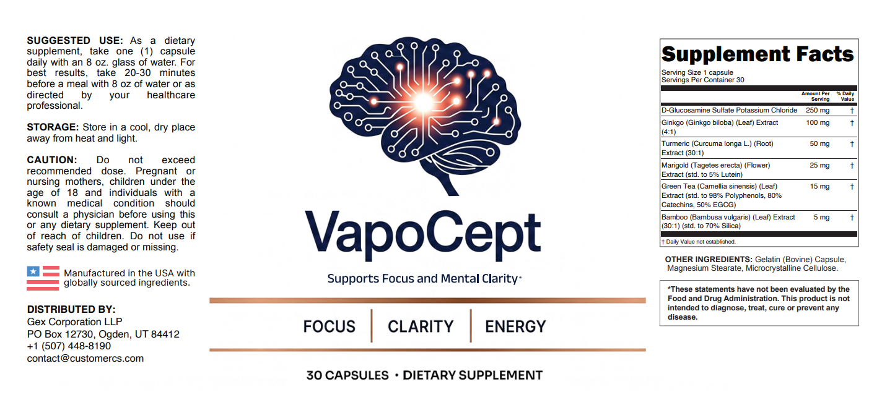

VapoCept Side Effects: Bleeding Risk, Allergies and Who Should Skip It
Mostly mild for healthy adults, but three ingredients touch on bleeding and one may come from shellfish. Here's who needs a doctor's okay first, and what symptoms mean stop.
Key takeaways
- Most side effects are mild: upset stomach, loose stools, headache or dizziness, usually in the first week or two.
- Bleeding is the main risk. Ginkgo and turmeric can affect platelets, and glucosamine may raise INR on warfarin.
- Stop before surgery, including dental surgery. Two weeks ahead is a common guideline for ginkgo.
- Shellfish allergy? Glucosamine is often made from shells and the label doesn't name the source.
- Not for pregnancy, breastfeeding or under-18s without a doctor's input, as the label itself says.
VapoCept side effects are usually mild: upset stomach, loose stools, headache or dizziness. The serious concern is bleeding, because ginkgo and turmeric can thin the blood and glucosamine may interact with warfarin. Skip it or ask your doctor first if you take blood thinners, have surgery planned, are pregnant, or have a shellfish allergy.
That's the short answer. The rest of this page explains where each risk comes from, which medications are the real problem, how far ahead of surgery to stop, and what symptoms mean you should stop taking it and call someone. We're working from the printed VapoCept label and published safety information for each ingredient, since there's no safety study on the finished product. For the full product verdict, see our VapoCept review.

VapoCept: check today's price
A ginkgo-led daily capsule with turmeric, lutein and green tea, every dose printed. One capsule a day, stimulant-free. Sold only on the official site, with a 60-day money-back guarantee.
See the official price →Is VapoCept safe?
For most healthy adults, VapoCept is unlikely to cause problems at the labeled dose of one capsule a day. The doses are modest. The largest ingredient, glucosamine, is at about a sixth of a typical joint dose, and the green tea extract is far below the levels linked to liver concerns. That works in VapoCept's favor on safety, even if it limits what the formula can do.
Two caveats. First, dietary supplements don't go through FDA approval before they're sold, so the manufacturer is responsible for quality and safety. Second, safety at a dose depends on who's taking it. A healthy 45-year-old and a 78-year-old on warfarin and three other prescriptions face very different risks from the same capsule. The label itself says anyone with a known medical condition should consult a physician first.
What about taking it long term?
There's no long-term safety data on VapoCept as a formula. The best clue comes from ginkgo, its main herbal ingredient. In the GEM trial, thousands of older adults took 240 mg a day of a standardized extract for about six years, more than twice VapoCept's ginkgo dose, and the study didn't find a significant increase in serious side effects overall. It wasn't designed to rule out rare bleeding events, though. Separately, a government animal study found liver and thyroid tumors in rodents given very large amounts of a ginkgo extract for two years, which NCCIH notes without knowing what it means for people.
A sensible approach: if you keep taking VapoCept beyond a few months, mention it at your yearly checkup, and take a short break now and then to see whether you notice any difference.
What side effects can VapoCept cause?
Here's what's been reported for each ingredient, mostly at doses higher than VapoCept's. Your odds of any of these are lower at VapoCept's amounts, but not zero.
| Ingredient (VapoCept dose) | Common, usually mild | Less common but serious |
|---|---|---|
| Glucosamine (250 mg) | Nausea, heartburn, diarrhea, constipation | Allergic reaction in people allergic to shellfish; higher INR with warfarin |
| Ginkgo extract (100 mg) | Headache, dizziness, stomach upset, constipation | Bleeding risk, especially with blood thinners; allergic skin reactions |
| Turmeric extract (50 mg) | Stomach upset, nausea, diarrhea | Rare cases of liver injury reported with turmeric supplements; may worsen gallbladder problems |
| Marigold / lutein (25 mg) | Rarely any at this dose | Allergy in people sensitive to marigold or daisy-family plants |
| Green tea extract (15 mg) | Unlikely at this dose | Liver injury is linked to very high EGCG doses, far above VapoCept's |
| Bamboo silica (5 mg) | None well documented | None known at this dose |
Most people who react at all notice it in the first week or two, usually as an unsettled stomach. Our guide to VapoCept's ingredients explains what each one is doing in the formula.
Can you take VapoCept with blood thinners?
This is the most important question on the page, and the answer is: not without your doctor's approval. Three of VapoCept's six ingredients have some connection to bleeding.
- Ginkgo can reduce how well platelets clump. There are case reports of serious bleeding, including bleeding in the brain and eye, in people taking ginkgo, some of whom were also on anticoagulants.
- Turmeric has mild antiplatelet effects in lab studies and may add to the effect of blood-thinning drugs.
- Glucosamine has been reported to raise INR, the blood-clotting measure doctors track, in people on warfarin.
The drugs to flag include warfarin (Coumadin, Jantoven), apixaban (Eliquis), rivaroxaban (Xarelto), dabigatran (Pradaxa), clopidogrel (Plavix), ticagrelor (Brilinta) and daily low-dose aspirin. Regular NSAIDs like ibuprofen and naproxen add risk too. So do other supplements that affect bleeding, such as high-dose fish oil, vitamin E and garlic pills. Stacking several of these is where small effects turn into real ones.
If your doctor does say yes, watch for unusual bruising, nosebleeds, bleeding gums, pink or brown urine, or black stools, and report them promptly.
One group often overlooked: people on a daily baby aspirin for heart protection. Aspirin feels harmless because it's sold over the counter, but it's a real antiplatelet drug. Adding ginkgo and turmeric on top is exactly the kind of combination doctors want to know about, even if the extra risk turns out to be small for you.

Is VapoCept safe if you're allergic to shellfish?
Be careful here. Glucosamine is commonly made from the shells of crab, shrimp and lobster, and VapoCept's label doesn't say where its glucosamine comes from. Whether shellfish-derived glucosamine actually triggers reactions is debated, since allergies are usually to the proteins in the meat, not the shell. But there are case reports, and it's not a risk worth taking blind.
If you have a shellfish allergy, contact the company and ask about the source before buying. If you've ever had a severe reaction, talk to your allergist first. The capsule is also bovine gelatin, which matters if you avoid beef products.
Should you stop VapoCept before surgery?
Yes. Because ginkgo and turmeric may increase bleeding, surgeons and anesthesiologists generally ask patients to stop supplements like these ahead of time. A common guideline for ginkgo is at least two weeks before a scheduled operation. Follow your own surgeon's instructions, which may differ.
This applies to dental surgery, implants and extractions as well as larger procedures. Tell the team you've been taking it, even if you stopped. Plenty of people forget to mention supplements because they don't think of them as medicine.
When can you restart? Ask the surgical team. Most people can resume once the wound has healed and any post-operative blood thinners are finished, but that depends on the procedure and on what medicines you're sent home with.
Can you take VapoCept while pregnant or breastfeeding?
No, not without your doctor's input, and the label says so directly. There's no safety research on this formula in pregnancy. Ginkgo is a particular worry close to delivery because of its bleeding effect, and NCCIH notes that it may be unsafe in pregnancy. The label also says the product isn't for anyone under 18.
Does VapoCept upset your stomach?
It can, for some people. Glucosamine and turmeric are the likely culprits, and both are known to cause nausea, heartburn or loose stools in a minority of users. The label suggests taking the capsule with 8 oz of water 20 to 30 minutes before a meal. That's fine for most people. If your stomach complains, try taking it with food instead. The timing difference is unlikely to matter for results, and it often settles things. Our guide to how to take VapoCept has more on timing.
If stomach trouble continues past a week or two, stop. A supplement you can't tolerate isn't worth pushing through.
People with acid reflux or a history of stomach ulcers deserve a little more caution. Turmeric can aggravate heartburn in some people, and an ulcer combined with anything that affects bleeding is a bad pairing. If that describes you, talk to your doctor before starting, and stop at once if you notice dark stools or worsening stomach pain.
What medications interact with VapoCept?
Beyond blood thinners, these are the combinations worth raising with your pharmacist. This list isn't complete, so if you take several prescriptions, ask for a proper interaction check.
| Medication type | VapoCept ingredient involved | Why it matters |
|---|---|---|
| Anticoagulants and antiplatelets | Ginkgo, turmeric, glucosamine | Higher bleeding risk; changes in INR |
| NSAIDs (ibuprofen, naproxen) | Ginkgo, turmeric | Both affect bleeding and the stomach lining |
| Diabetes medications | Turmeric, glucosamine | Turmeric may lower blood sugar slightly; monitor if you're on insulin or sulfonylureas |
| Seizure medications | Ginkgo | Ginkgo has been linked to seizures in rare reports; anyone with epilepsy should ask first |
| Drugs processed by the liver | Ginkgo, turmeric | Both can affect liver enzymes that break down many drugs |
What if you have diabetes or kidney disease?
Early worries that glucosamine raises blood sugar haven't held up well in studies, and VapoCept's 250 mg is a small dose. Turmeric may nudge blood sugar slightly lower. Neither is likely to matter much, but if you use insulin or a sulfonylurea, check your readings for the first few weeks.
The glucosamine form used here is stabilized with potassium chloride. The potassium it adds is small, much less than in a banana. People with advanced kidney disease, or anyone told to limit potassium, should still mention it to their care team.
Never stop or change a prescription to make room for a supplement. If there's a conflict, the supplement goes.
Who should skip VapoCept?
- Anyone on blood thinners or antiplatelet drugs, unless their doctor approves.
- People with a bleeding disorder, or surgery or dental work in the next two weeks.
- People allergic to shellfish, until they confirm the glucosamine source.
- Pregnant or breastfeeding women, and anyone under 18.
- People with gallbladder disease or gallstones (turmeric) or a seizure disorder (ginkgo).
- People with liver disease, who should check any herbal supplement with their doctor.
- Anyone diagnosed with mild cognitive impairment. An observational study linked glucosamine to faster progression to dementia; it's not proof, but we explain it in our article on glucosamine and Alzheimer's progression.
- Vegetarians and people who avoid beef, because of the bovine gelatin capsule.
If you're in one of these groups and still want a focus supplement, our best memory supplements of 2026 lists options with different ingredient profiles. Run any of them past your doctor too.
What should you do if you have a side effect?
For mild stomach upset or a headache, stop for a few days and see if it clears. You can try again with food if you want, or simply stop. Get medical help promptly for any of these:
- Unusual bruising, bleeding that won't stop, blood in urine, or black, tarry stools.
- A sudden, severe headache, vision changes or confusion.
- Hives, swelling of the lips or throat, or trouble breathing.
- Yellowing skin or eyes, dark urine or pain in the upper right abdomen, which can signal liver trouble.
Keep the bottle so your doctor can see the label. You can also report a suspected reaction to the FDA through its Safety Reporting Portal, which helps regulators spot problems with supplements. If you bought through the official checkout and want your money back, the 60-day guarantee applies whatever the reason.
Bottom line on VapoCept side effects
VapoCept's low doses make it a fairly gentle product for healthy adults, and most people who take it won't notice any side effects at all. The real risks are specific: bleeding for anyone on blood thinners or heading into surgery, a possible allergy question for people sensitive to shellfish, and unknowns in pregnancy. If none of those apply, it's a low-risk experiment. If one does, talk to your doctor before the first capsule, not after.
VapoCept: check today's price
A ginkgo-led daily capsule with turmeric, lutein and green tea, every dose printed. One capsule a day, stimulant-free. Sold only on the official site, with a 60-day money-back guarantee.
See the official price →Frequently asked questions
Can VapoCept cause headaches?
It can in some people. Headache is one of the more commonly reported side effects of ginkgo. It's usually mild and fades within a few days. If headaches are severe or sudden, stop taking it and see a doctor.
Does VapoCept affect sleep?
It shouldn't. VapoCept lists no caffeine or stimulants, and its green tea extract is a very small amount. If you notice trouble sleeping after starting it, try taking it earlier in the day and see whether it changes.
Can VapoCept raise blood pressure?
None of its ingredients is known to raise blood pressure at these doses. If you take blood pressure medication, mention VapoCept to your doctor anyway, mainly because of ginkgo's effects on circulation and bleeding.
Is it safe to take VapoCept with fish oil?
Usually, for healthy people at normal doses. But fish oil, especially at high doses, also affects bleeding. If you also take a blood thinner or aspirin, ask your doctor before combining them.
Can I drink alcohol while taking VapoCept?
There's no known direct interaction. Heavy drinking increases bleeding risk and stresses the liver, though, and it also harms memory. Moderation makes sense with or without a supplement.
Does VapoCept cause weight gain?
There's no reason to expect it. The capsule contains no sugar or calories worth counting, and none of its ingredients is linked to weight gain at these doses.
Can older adults take VapoCept safely?
Many can, but older adults are more likely to take blood thinners or several medications. Bring the bottle to your doctor or pharmacist and ask them to check it against your current prescriptions.
No red flags for you?
If none of the risks above apply, VapoCept is a gentle one-capsule routine with a 60-day money-back guarantee on official orders. Check current prices on the official site.
See VapoCept's official price →Related: VapoCept review · VapoCept ingredients explained · Glucosamine and Alzheimer's progression · Ginkgo biloba for memory · Best memory supplements of 2026